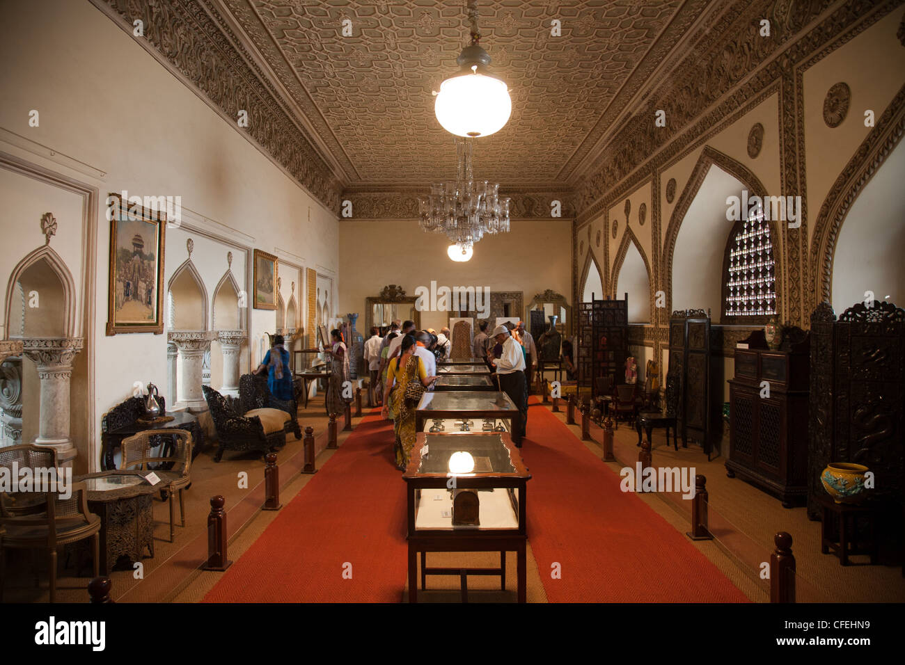
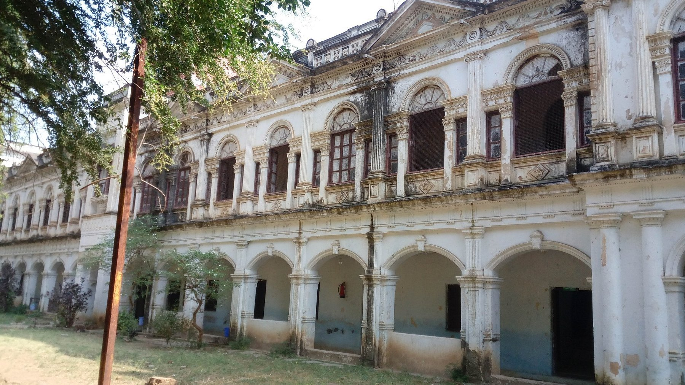
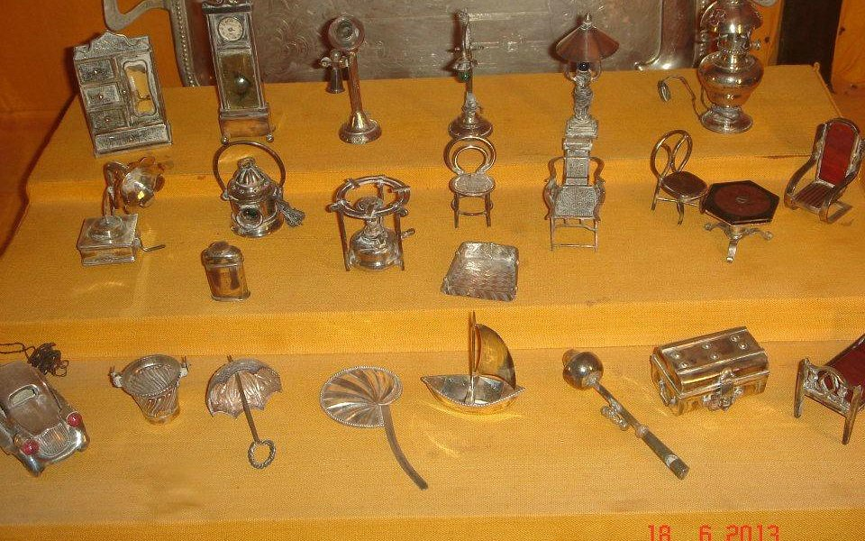
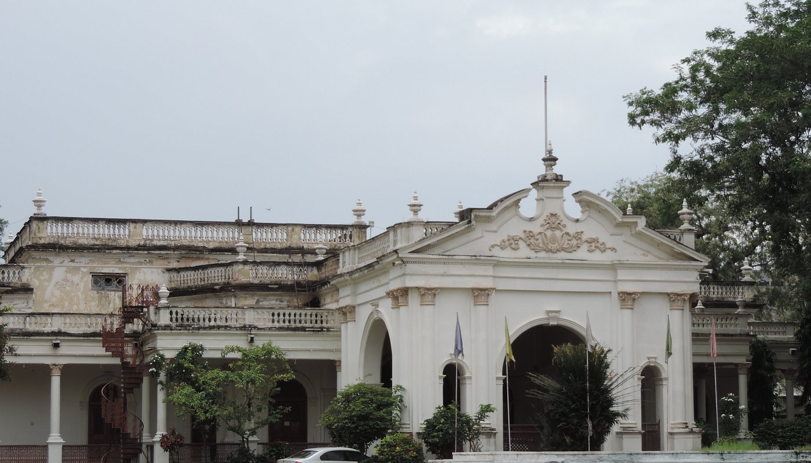
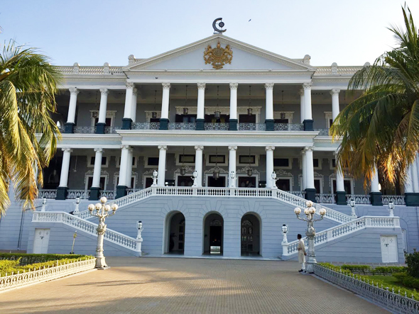
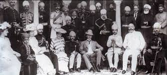
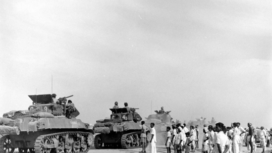

About the Nizam's Museum
The Nizams of Hyderabad were one of the wealthiest and most influential royal dynasties in Indian history. From the early 18th century until 1948, they ruled the princely state of Hyderabad, playing a vital role in politics, economy, and culture. The last Nizam, Mir Osman Ali Khan, was once the richest man in the world, and his contributions to architecture, infrastructure, and education left a lasting impact on the city.
Purani Haveli, located in the heart of Hyderabad, served as the official residence of the Nizams. Built in the 18th century by Ali Khan Bahadur, it combines European and Mughal architectural styles with lavish interiors, sprawling courtyards, and intricate wooden carvings. The palace is famous for housing the world’s longest wardrobe and a 150-seater manually operated lift made of teakwood.
Today, Purani Haveli stands as a testament to the Nizams’ opulent lifestyle and refined taste. The palace has been transformed into the Nizam’s Museum, which showcases a remarkable collection of gifts, mementos, and personal belongings of the royal family. Visitors can witness everything from golden thrones and vintage cars to rare manuscripts and jewel-encrusted items – offering a glimpse into a bygone era of imperial splendor.
The Nizams were known for their secular governance and patronage of art, literature, and architecture. Their contributions laid the foundation for modern Hyderabad, making it a city where tradition and progress coexist. The legacy of the Nizams is preserved not just in museums, but in the very spirit of Hyderabad’s vibrant culture and timeless elegance.
Must-See Exhibits
- Gold and silver artifacts used by the Nizams
- Velvet throne of the last Nizam
- Original 1930s Rolls Royce
- Hand-written Quran with a golden cover
- Miniature paintings and rare manuscripts
Visual Gallery






Royal Timeline
Walk through the glorious legacy of the Nizams, brought to life with timeless photos and rich history that shaped Hyderabad.

1724 – Establishment of the Asaf Jahi Dynasty
Nizam-ul-Mulk founds the Asaf Jahi dynasty, making Hyderabad a princely state of grandeur. This era marks the beginning of cultural and architectural growth in the region.

1857 – Alliance with British Empire
During the Revolt of 1857, the Nizam forms a strategic alliance with the British, ensuring the continuity of his reign and gaining British favor and military support.

1948 – Integration into Indian Union
Operation Polo leads to the peaceful annexation of Hyderabad into the Indian Union. This event marks a significant transition in the governance of the state.
Present Day – Preserving the Legacy
The Nizam’s Museum continues to preserve and display the rich cultural heritage and royal treasures, attracting historians, tourists, and curious minds alike.
Plan Your Visit
Located at Purani Haveli, Hyderabad, the Nizam's Museum is open from 9:00 AM to 6:00 PM every day except Fridays and public holidays. Guided tours are available.
Visitor Reviews
“A breathtaking experience! The gold tiffin alone was worth the visit.” – Arjun R.
“Loved the guided tour. The museum is clean, informative, and truly royal!” – Sarah M.